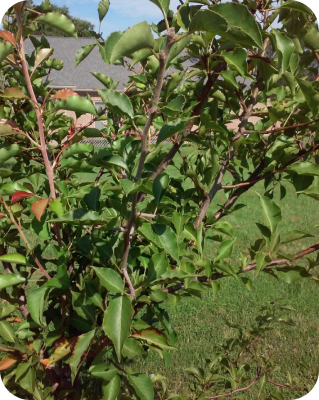

This shiny green beetle has destroyed tens of millions of ash trees across North America and at the Bulk Farm. Larvae feed under the bark, cutting off the tree's ability to transport water and nutrients, leading to rapid death.
Map from emeraldashborer.info
Don’t move firewood and report sightings using the following link: aphis.usda.gov/plant-pests-diseases/eab
emeraldashborer.info/
aphis.usda.gov/plant-pests-diseases/eab
Once popular as ornamental street trees, Bradford pears spread aggressively and outcompete native plants. Their weak branching structure also makes them prone to storm damage.
Avoid planting them. Remove existing shrubs when possible and replace with native alternatives like serviceberry or dogwood.
ourwaterways.org/bradford-pear/
hyg.ipm.illinois.edu/article.php?id=1277
Mugwort is a hardy, aromatic herb known for its silvery-green leaves and historical use in herbal medicine. It thrives in a variety of soils and is often found along roadsides and disturbed areas.
Repeated mowing or digging up the roots can help control spread. You can also burn them in a controlled environment.
hachettebookgroup.com/storey/ellen-zachos-backyard-foraging-mugwort/
thespruce.com/how-to-grow-mugwort-5077403
Multiflora Rose is a fast-growing, thorny shrub with clusters of small, fragrant white to pinkish flowers. Originally introduced for erosion control, it’s now considered invasive in many regions.
They should be cut back and the root system removed. Use gloves due to thorns. Herbicides can also be used but may need multiple applications to be effective.
nps.gov/cuva/learn/nature/multiflora-rose.htm
backyardforager.com/rosa-multiflora-friend-or-foe/
Autumn Olive is a resilient shrub with silvery leaves and red, berry-like fruits that are rich in antioxidants. Though valued for wildlife habitat and soil improvement, it spreads aggressively and is invasive in many areas.
You can cut and dig out roots or apply targeted herbicide under professional guidance. Cutting off flowers or fruit can also prevent reproduction by cutting off seed development.
michiganaudubon.org/invasive-species-focus-autumn-olive/
extension.umd.edu/resource/autumn-olive/